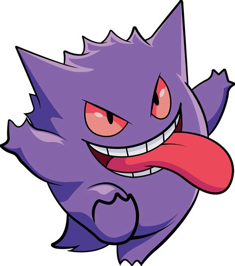
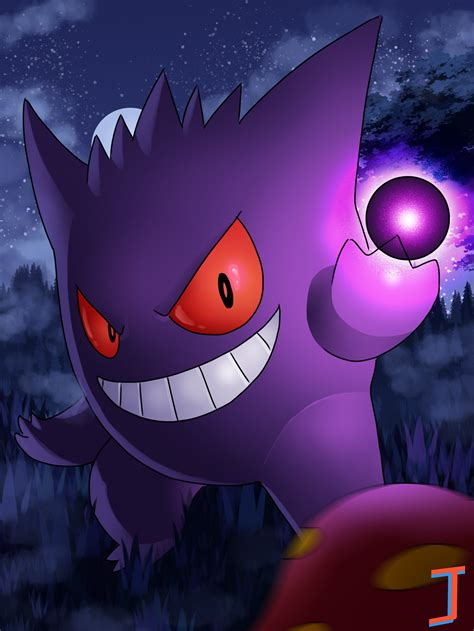
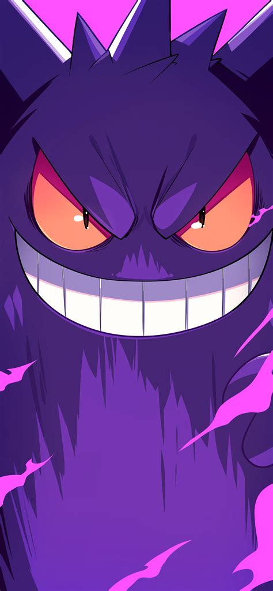
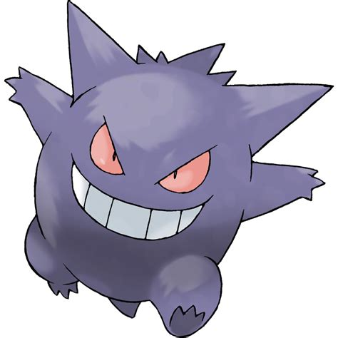

Hi there! My name is Gengar, and I'm a Ghost- and Poison-type Pokémon. Don't let my spooky appearance fool you—I'm playful, energetic, and always ready for an adventure. I enjoy exploring new places, learning new things, and taking on exciting challenges alongside my trainer. No matter the situation, I bring plenty of energy and enthusiasm wherever I go. It's great to meet you! I look forward to sharing many adventures with you.




Score: 0